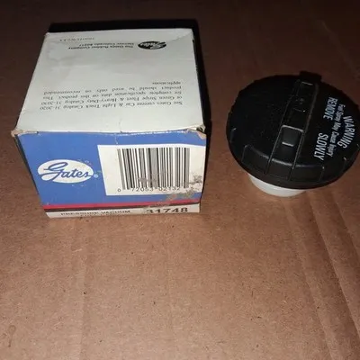
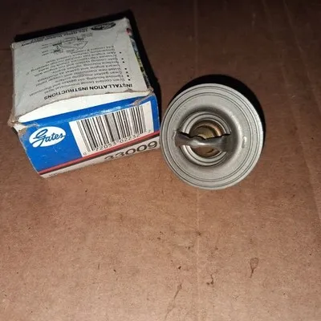
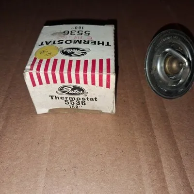
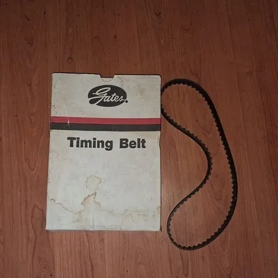
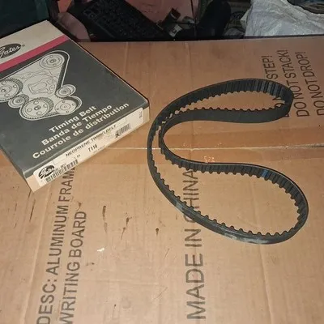

Oil Drain Plugs, Filler Caps & Dipsticks
Gates 31085 Engine Oil Filler Cap NOS Dodge Caravan Colt Chrysler Sebring 79-05
31085
Fits 1995-2005 Chrysler Sebring · 1984-2000 Dodge Caravan (3000 listed)
$17.99
View details44 parts from Gates, mostly engine parts and ignition & tune-up. Each listing shows the part number, condition and photos. Check fitment on the part page before you order.
44 parts
Online checkout through Square. Ships from Carbondale, PA, or pick up by confirmed appointment only. Fitment question? Message us.
31085
Fits 1995-2005 Chrysler Sebring · 1984-2000 Dodge Caravan (3000 listed)
$17.99
View details
31103
Fits 1994-2001 AM General Hummer · 2008-2013 BMW 128i (781 listed)
$18.99
View details
31108
Fits 1978-1987 Subaru Brat · 1973-1989 Subaru DL (294 listed)
$21.99
View details
31109
Fits 1986-2001 Acura Integra · 1985-1996 Ford Bronco (3001 listed)
$18.99
View details
31272
Fits 1985-1995 Chevrolet Astro · 1971-1974 Chevrolet Corvette (3000 listed)
$12.99
View details
31521
Fits 1983-1991 Chevrolet G20 · 1983-1991 Chevrolet G30 (2752 listed)
$12.99
View details
31523
Fits 1977-2003 Buick Century · 1991-1993 Buick Commercial Chassis (3000 listed)
$12.99
View details
31526
Fits 1954-1957 Chevrolet Bel Air · 1957-1962 Chevrolet Corvette (2073 listed)
$12.99
View details
31527
Fits 1986-1989 Acura Integra · 1972-1977 Audi 100 Series (3000 listed)
$16.99
View details
31528
Fits 1973-1985 Buick Century · 1959-1985 Buick Electra (3001 listed)
$12.99
View details
31720
Fits 1986-1993 Acura Integra · 1986-1990 Acura Legend (3001 listed)
$21.99
View details
31748
Fits 1975-1996 Buick Century · 1975-1996 Buick Regal (3002 listed)
$12.99
View details
33008
Fits 1968-1989 Buick LeSabre · 1975-1986 Chevrolet C10 (508 listed)
$19.99
View details
33009
Fits 1961-1967 Chevrolet C10 Panel · 1961-1974 Chevrolet C10 Pickup (131 listed)
$15.99
View details
33036
Fits 1953-1962 Cadillac DeVille · 1950-1962 Cadillac Series 60 Fleetwood (765 listed)
$22.99
View details
33038
Fits 1959-1966 Buick LeSabre · 1954-1958 Buick Century (2679 listed)
$19.99
View details
33039
Fits 1959-1966 Buick LeSabre · 1963-1966 Buick Riviera (2679 listed)
$12.99
View details33059
$13.99
View details
33148
Interchange Stant 13698
$26.99
View details
33189
Fits 1985-1986 Chevrolet Astro · 1982-1986 Chevrolet Camaro (510 listed)
$15.99
View details
33198
Fits 1972-1981 Ford Courier · 1986-1987 Toyota 4Runner (262 listed)
$14.99
View details
33199
Fits 1986-1987 Toyota 4Runner · 1970-1988 Toyota Pickup (262 listed)
$14.99
View details
33208
Fits 1998-2006 Volkswagen Beetle (21 listed)
$14.99
View details
33209
Fits 1968-1974 Volvo 144 · 1968-1974 Volvo 145 (440 listed)
$25.99
View details
33258
Fits 2007-2008 Pontiac G3 · 1993 Asuna GT (1572 listed)
$28.99
View details
33259
Fits 1982-1989 Chevrolet Camaro · 1982-1986 Chevrolet Cavalier (589 listed)
$15.99
View details
33268
Fits 1987-1994 Plymouth Sundance · 1984-1995 Plymouth Voyager (1581 listed)
$12.99
View details
33269
Fits 1983-1986 Plymouth Turismo · 1984-1995 Dodge Caravan (172 listed)
$14.99
View details
33279
Fits 1982-1984 Cadillac DeVille · 1982-1985 Cadillac Eldorado (90 listed)
$17.99
View details
33299
Fits 1983-1997 Ford Ranger · 1979-1993 Ford Mustang (371 listed)
$17.99
View details
33419
Fits 1987-1991 Chevrolet Cavalier · 1987-1991 Chevrolet Corsica (116 listed)
$15.99
View details
33429
Fits 2005-2009 Buick LaCrosse · 2006-2008 Buick Lucerne (30 listed)
$21.99
View details
33478
Fits 1999-2004 Ford Mustang · 1996-2008 Ford Ranger (1479 listed)
$14.99
View details
33479
Fits 1999-2004 Ford Mustang · 1996-2008 Ford Ranger (817 listed)
$15.99
View details
33488
Fits 1982-1990 Chrysler LeBaron · 1983-1985 Dodge 600 (1600 listed)
$26.99
View details
33489
Fits 1984-2000 Dodge Caravan · 1974-1994 Dodge Colt (1658 listed)
$25.99
View details
33529
Fits 1982-1988 Buick Skyhawk · 1982-1988 Buick Skylark (756 listed)
$12.99
View details
33568
Fits 1998-2001 Honda Accord · 1984-1998 Honda Civic (225 listed)
$14.99
View details
33708
Fits 1983-2000 Toyota Corolla · 1996-2000 Toyota RAV4 (147 listed)
$25.99
View details
33779
Fits 1986-1990 Ford Bronco II · 1991-2000 Ford Explorer (794 listed)
$14.99
View details
5536
Fits 1957-1959 Dodge D100 Pickup · 1960-1966 Dodge D100 Series (8 listed)
$14.99
View details
CD70
Fits 1983-1988 Toyota Corolla · 1985-1988 Chevrolet Nova (140 listed)
$26.99
View details
T115
Fits 1990-1994 Subaru Loyale · 1985-1991 Subaru XT (25 listed)
$24.99
View details
T116
$26.99
View details